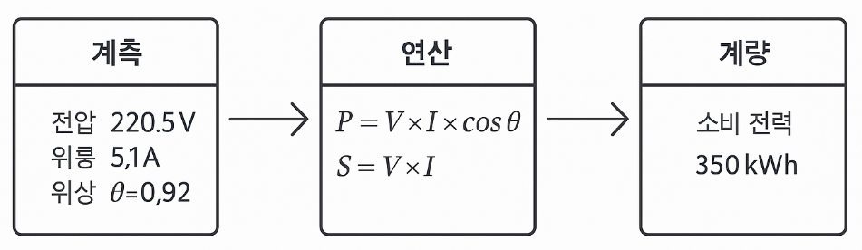

▶ 최대수요전력(Maximum Demand Power)
- 정해진 수요 측정주기(예:15분,30분...) 중에서
가장 큰 평균 유효전력을 말함.
▶ 최대수요전력 단위
- 보통 kW (킬로와트)
- 무효전력까지 포함할 경우 kVA로 표현됨
▶ 최대수요전력 계산식
- 
- T : 수요 측정 주기 (예: 15분, 30분...)
- P(t) : 시간에 따른 유효전력
▶ 최대수요전력 용도 - 사용처 :
- 전기요금 : 계약전력과 비교해 초과 시 페널티
적용됨. - 부하설계 : 변압기, 케이블, 차단기 용량산정기준
- 수요관리 : 피크시프트, DR 전략에 활용
▶ 최대수요전력 예시 - 계약 전력이 100kW
- 이번 달 측정된 최대수요전력 : 120 kW
▶ 최대수요전력 실제 사용예시 - 15분 간격으로 평균 전력 측정
- 한 달 동안 가장 큰 15분 평균전력이
“최대수요전력” 이됨.
|